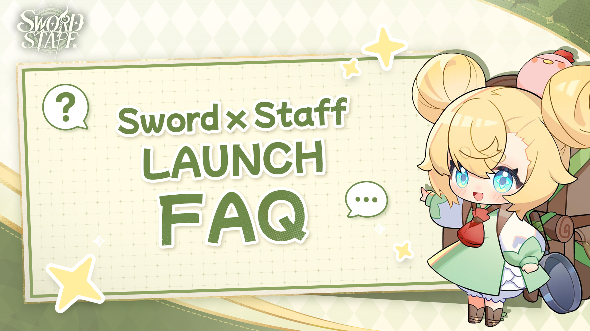

FAQ Ra Mắt Sword X Staff

FAQ Ngày Ra Mắt: Mọi Thứ Bạn Cần Biết]
Chúng tôi đã tổng hợp những câu hỏi thường gặp nhất để giúp mọi người chuẩn bị cho hành trình vào Kanstein!
✦ Ra Mắt & Tải Game ✦
Ra mắt chính thức: 19 tháng 5, 2026, lúc 8:30 sáng (UTC-5)
Khu vực ra mắt: Chủ yếu là Bắc Mỹ và Châu Âu. (Singapore, Đông Nam Á và Úc không nằm trong đợt ra mắt này.)
Nền tảng: có mặt trên cả Android và iOS qua Google Play và App Store.
Tải trước: Hiện tại chưa có kế hoạch cho giai đoạn tải trước.
✦ Câu Hỏi Thường Gặp ✦
>> Tải Game, Cài Đặt, Thiết Bị và Vấn Đề Tài Khoản
Hỏi: Cấu hình thiết bị khuyến nghị cho đợt ra mắt chính thức là gì?
Đáp: Vui lòng tham khảo cấu hình khuyến nghị dưới đây:
iOS: iOS 12.0 trở lên, iPhone XS trở lên
Android: Android 13.0 trở lên, RAM tối thiểu 4GB, chạy hệ điều hành 64-bit
Lưu ý: Do có rất nhiều mẫu thiết bị Android khác nhau, hiệu năng có thể khác nhau trên các máy cấu hình thấp.
Hỏi: Tôi có thể dùng giả lập để chơi không?
Đáp: Có, game hỗ trợ giả lập. Chúng tôi khuyến nghị dùng máy ảo Android 9 trở lên với tối thiểu 1 nhân CPU và 2GB RAM. Cấu hình thấp hơn có thể khiến game bị crash khi khởi động hoặc gặp vấn đề về độ ổn định.
Hỏi: Làm sao để liên hệ bộ phận hỗ trợ khách hàng nếu gặp lỗi hoặc sự cố sau khi ra mắt chính thức?
Đáp: Bạn có thể liên hệ với chúng tôi bằng các cách sau:
Cách 1: Trong game, vào Trang Chủ (Home) > Menu Chính (góc dưới bên phải) > Trung Tâm Người Dùng (User Center) > Trung Tâm Trợ Giúp (Helper Center).
Cách 2: Trên màn hình đăng nhập, chạm vào Chăm Sóc Khách Hàng (Customer Service) ở góc trên bên phải.
Bạn cũng có thể gửi tin nhắn riêng cho trang Facebook chính thức của chúng tôi hoặc tìm sự giúp đỡ trong máy chủ Discord chính thức: Kanstein Hub.
Hỏi: Game của tôi cập nhật chậm hoặc bị kẹt khi tải. Tôi nên làm gì?
Đáp: Chúng tôi khuyến nghị dùng kết nối Wi-Fi ổn định khi tải hoặc cập nhật game để có trải nghiệm tốt nhất. Nếu vẫn tải chậm, hãy thử chuyển sang một mạng khác. >> Hoàn Tiền Nạp Và Nhận Thưởng
>> Hoàn Tiền Nạp Và Nhận Thưởng
Hỏi: Làm sao để nhận Voucher từ Hoàn Tiền Nạp (Top-Up Rebate)?
Đáp: Trang Chủ (Home) > Sự Kiện Hấp Dẫn (Thrilling Events) > Hoàn Tiền Nạp (Top-Up Rebate). Các nhà thám hiểm đủ điều kiện có thể chạm vào nút nhận trên màn hình sự kiện để nhận Voucher tương ứng.
#Hãy cẩn thận chọn đúng nhân vật mà bạn muốn nhận thưởng. Sau khi xác nhận, #hành động này không thể hoàn tác!
Hỏi: Chương Trình Thưởng Điểm Nạp Thử Nghiệm Beta (Beta Test Top-Up Points Rewards Program) là gì?
Đáp: Để cảm ơn các Nhà Thám Hiểm đã đồng hành cùng chúng tôi trong đợt thử nghiệm beta, Điểm Nạp tương ứng sẽ được cộng vào nền tảng nạp chính thức dựa trên tổng số tiền bạn đã nạp trong đợt beta. Những điểm này cũng có thể cộng dồn với điểm kiếm được sau khi ra mắt chính thức. Đạt các mốc điểm nhất định để nhận những phần thưởng giá trị, bao gồm trang phục [Eternal Night Ancestor]!
Xem toàn bộ chi tiết chương trình tại đây: https://www.facebook.com/share/p/1KuHgZ9cyh/
Hỏi: Làm sao để đổi gift code sau khi ra mắt chính thức?
Đáp: Sau khi đăng nhập vào game, vào Trang Chủ (Home) > Menu Chính (góc dưới bên phải) > Trung Tâm Người Dùng (User Center) > Gift Code, sau đó nhập gift code của bạn tại đó để nhận thưởng.